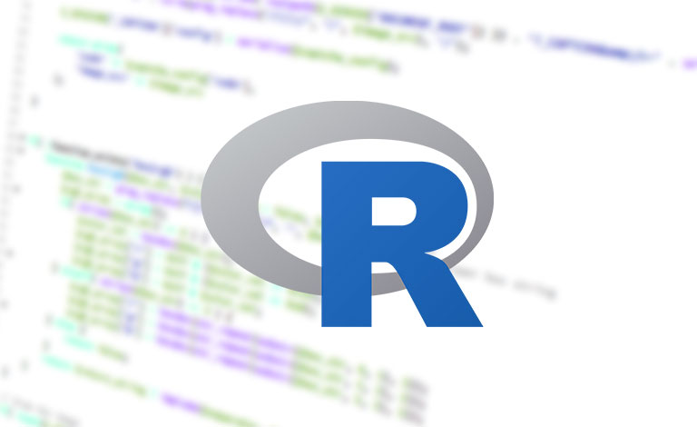

C# é uma linguagem de programação, multiparadigma, de tipagem forte, desenvolvida pela Microsoft como parte da plataforma .NET. A sua sintaxe orientada a objetos foi baseada no C++ mas inclui muitas influências de outras linguagens de programação, como Object Pascal e, principalmente, Java.Java é uma linguagem de programação orientada a objetos desenvolvida na década de 90 por uma equipe de programadores chefiada por James Gosling, na empresa Sun Microsystems. Em 2008 o Java foi adquirido pela empresa Oracle Corporation. Diferente das linguagens de programação modernas, que são compiladas para código nativo, a linguagem Java é compilada para um bytecode que é interpretado por uma máquina virtual (Java Virtual Machine, mais conhecida pela sua abreviação JVM). A linguagem de programação Java é a linguagem convencional da Plataforma Java, mas não é a sua única linguagem. J2ME Para programas e jogos de computador, celular, calculadoras, ou até mesmo o rádio do carro.Python é uma linguagem de programação de alto nível, interpretada de script, imperativa, orientada a objetos, funcional, de tipagem dinâmica e forte.

R é uma linguagem de programação multi-paradigma orientada a objetos, programação funcional, dinâmica, fracamente tipada, voltada à manipulação, análise e visualização de dados.